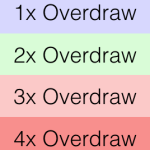

View
目录
工作流程
主要是 measure、layout、draw 三大流程，即测量、布局和绘制，其中 measure 确定 View 的测量宽/高，layout 确定 View 的最终宽高和四个顶点的位置，而 draw 则将 View 绘制到屏幕上。
View 的最终大小是在 layout 阶段确定的，但是几乎所有情况下 View 的测量大小和最终大小是相等的。
View 的绘制过程分以下几步：
绘制背景 background.draw(canvas)
绘制自己（onDraw）
绘制 children（dispatchDraw）
绘制装饰（onDrawScrollbars）
Baseline
View 的文字的底部对齐线相对 View 顶部的距离，像 ImageView 这种默认没有文字的，需要在 xml 里显式设置 android:baseline="20dp"，不然在 RelativeLayout 里的其它 View 想要 android:layout_alignBaseline="@id/xxx" 时会不生效。
双缓冲机制
在绘制控件时，先将要绘制的内容绘制在一张图片中，再将图片一次性绘制到控件上。
View 与 SurfaceView
View
必须在 UI 线程更新画面，速度较慢，如果更新画面耗时较长，有可能造成 UI 卡顿。
SurfaceView
基于 View 进行拓展，更适合 2D 游戏的开发，类似使用双缓冲机制，可以在新的线程中更新画面所以刷新速度比 View 快，可能需要处理线程同步的问题。
GLSurfaceView
基于 SurfaceView 拓展，用于 OpenGL 3D 游戏开发。
一般来讲，在游戏开发中如棋类这种被动更新画面的，使用 View 就好了，跑酷类等需要主动更新画面的，使用 SurfaceView 更合适。
GPU 过度绘制
在「开发者选项」-「调试 GPU 过度绘制」可以打开显示。
颜色显示：
控件本身的颜色
绘制一次。
蓝色
绘制二次。
绿色
绘制三次。
粉红色
绘制四次。
红色
绘制五次。

可能的原因：
- 完全看不到的地方也设置了背景色。
最佳实践：
看不到的界面就不绘制。